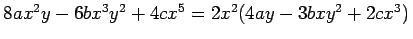
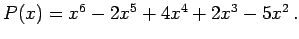

Inhalt Index DeskTop Bronstein

 Arithmetik Elementare Rechenregeln Ganzrationale Ausdrücke Darstellung in Form eines Polynoms
Arithmetik Elementare Rechenregeln Ganzrationale Ausdrücke Darstellung in Form eines Polynoms


Polynome lassen sich in vielen Fällen als Produkte von Monomen und Polynomen darstellen. Als Hilfsmittel stehen hierzu das Ausklammern und Gruppieren, spezielle Formeln sowie die allgemeinen Eigenschaften von Gleichungen zur Verfügung.
| Beispiel A |
|
Ausklammern: . |
| Beispiel B |
|
Gruppieren: 6x2 +xy - y2 -10xz - 5yz = 6x2 + 3xy - 2xy -y2 -10xz -5yz |
| Beispiel C |
|
Anwendung von Gleichungseigenschaften: 
|